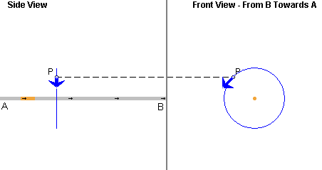

Prerequisites
Students should be somewhat familiar with the field concept, the concept of electric current, and have a basic understanding of vectors.
Learning Outcomes
Students will be able to apply the Biot-Savart Law to calculate the magnetic field due to a short current segment and will be able to use the superposition principle to calculate the magnetic field due to several such segments. They will be able to calculate the magnetic field due to a current-carrying straight wire.
Instructions
Students should know how the applet functions, as described in Help and ShowMe.
The applet should be open. The step-by-step instructions in the following text are to be done in the applet. You may need to toggle back and forth between instructions and applet if your screen space is limited.
 Laws
Laws
 Biot-Savart Law
Biot-Savart Law
 Superposition
Principle for Magnetic Fields
Superposition
Principle for Magnetic Fields
 Magnetic Field Due To A
Current Segment
Magnetic Field Due To A
Current Segment
 Magnetic Field Due
To Several Current Segments
Magnetic Field Due
To Several Current Segments
 Magnetic Field Due To Current
In A Straight Wire
Magnetic Field Due To Current
In A Straight Wire

Oersted discovered in 1820 that a magnetic compass needle was deflected near a current-carrying wire. Very soon after this discovery, Ampère and the team of Biot and Savart performed experiments on the effects of currents on magnets and gave quantitative descriptions of the forces produced. The law that describes the magnetic field accompanying electric currents is now called the Biot-Savart Law. In the form given below, the law can be used to calculate the magnetic field due to any distribution of currents.
Imagine an infinitesimal segment of a wire carrying a current I. The segment has length ds. Figure 1 below illustrates the segment in orange, a field point P, and in blue the infinitesimal magnetic field vector at P due to the current in the given segment. The field point P and the field vector are shown in two projections: the Side View shows the projection onto the y,z plane and the Front View the projection onto the x,y plane. The coordinate axes are defined under Help.
Figure 1
Looking at the wire from the side, the field point P is in front of the screen and the field vector is pointing downwards and towards the viewer. The field vector is along the tangent to the circle through P that is concentric with the axis along which the given wire segment is aligned.
The direction of the field vector is given by the following right-hand rule: point the thumb of the right hand in the direction of the current, point the outstretched fingers of the right hand from the segment axis towards P, and the palm of the right hand will be facing in the direction of the magnetic field vector. This is illustrated in Figure 2 below.

Figure 2
The magnitude dB of the infinitesimal magnetic field at P due to the infinitesimal current segment is given by
dB = (m0/4p) I ds sin a / d2,
Here a is the angle between the directions of the current in the segment and of the displacement vector
from the segment to field point P. d is the magnitude of this vector, i.e., the distance from the segment to P.
m0 is a universal constant called permeability of the vacuum. The numerical value of m0/4p is exactly 10-7, by definition.
The current direction in this definition is the "conventional" one.
The angle a and the distance d are illustrated by the applet when you select the Coordinate View mode and click on the relevant wire segment. See also Point 3 under Help. Keep in mind that the angle labeled a in the applet is the projection of the real angle onto the y,z plane and therefore does not have the correct size of the real angle a, unless point P is in the y,z plane.
Comment. The Biot-Savart expression above for the magnitude of the magnetic field is correct for infinitesimal ds and dB, i.e., for a segment length and magnetic field vector in the limit where these quantities go to zero. The applet cannot simulate true infinitesimals. In the applet, the segment length ds is taken to be 0.20 m, and the displacement

The total magnetic field vector  at
the field point P is the vector sum of the infinitesimal
magnetic field vectors d due
to all infinitesimal current-carrying wire segments.
at
the field point P is the vector sum of the infinitesimal
magnetic field vectors d due
to all infinitesimal current-carrying wire segments.
Comment. A sum of infinitesimals is called an integral. Since the applet is not simulating true infinitesimals, but small and finite current segments and the corresponding finite field vectors, we will be doing ordinary sums rather than integrals.
Exercise 1. Reset  the applet.
the applet.
Select the Segments button, and click on the wire in the center of the window to select the segment at the origin, Segment 0. To check whether you have selected the segment at the origin, display the Data box. If you have selected the wrong segment, deselect it by clicking on the selected segment and click on another segment.
Choose the "Coordinate View" mode to move the field point P to (x,y,z) = (-0.30, 0.30, 0.40) m. Figure 3 below shows how the field point is situated. The Data box will show the coordinates of P.

Figure 3
Return to the "Physical Reality View" mode. Set the Scale slider to 1,000, and make sure the current is set to 5.00 A. The field vector at P should look like that in Figure 4 below. You may also want to exhibit the field line projections shown in Figure 4.
Figure 4
Use the Biot-Savart law (1) to calculate the magnitude B0 of the magnetic field at point P due to Segment 0.
Answer. Let us first calculate the distance d0 and the sine of the angle a0.
Since the center of Segment 0 is at (x,y,z) = (0,0,0) and point P is at (x,y,z) = (-0.30,0.30,0.40) m,
 d0 =
d0 =  [(-0.30)2 + 0.302 +
0.402)] = 0.5831 m.
[(-0.30)2 + 0.302 +
0.402)] = 0.5831 m. (2)
(2)
To calculate sin a0, you need the perpendicular distance r of P from the z-axis on which the current segment is located. (Go into Coordinate View mode to see the coordinate r defined.) Thus,
 r = [(-0.30)2 +
0.302] = 0.4243 m.
r = [(-0.30)2 +
0.302] = 0.4243 m. (3)
(3)
r and d0 form a right-angle triangle with d0 as hypotenuse and angle a0 opposite to r. Therefore,
 sin a0 = r / d =
0.4243/0.5831 = 0.7277 .
sin a0 = r / d =
0.4243/0.5831 = 0.7277 . (4)
(4)
This corresponds to an angle a0 = 46.7o, but we don't need this value. We only need sin a0.
We are now ready to substitute the pieces into Equ.(1).
 B0 =
10-7×5.00×0.20×0.7277 /
0.58312 = 2.14×10-7
T.
B0 =
10-7×5.00×0.20×0.7277 /
0.58312 = 2.14×10-7
T. (5)
(5)
This is the value shown in the Data box in Figure 5 below.

Figure 5
Exercise 2. Continuing from Exercise 1, select Segment 2 directly below P, at z = 0.40 m. Calculate the magnetic field B2 at P due to this segment. Check your answer in the Data box.
Hint: The displacement vector from the center of the segment to P has the coordinates
 (dx,dy,dz)
= (-.30-0, 0.30-0, .40-.40) = (-.30, -.30, 0) m .
(dx,dy,dz)
= (-.30-0, 0.30-0, .40-.40) = (-.30, -.30, 0) m .  (6)
(6)
Also predict the direction of the magnetic field due to Segment 2. Explain in your Notebook how you predict the direction. Then use the applet to check the direction by deselecting Segment 0 so that only Segment 2 is selected.
Exercise 3. Continuing from Exercise 2, reverse the direction of the current by setting I to -5.00 A. Predict the direction of the magnetic field due to Segments 2 and 0 when the current direction is reversed. Explain your prediction in your Notebook. Then use the applet to check it, selecting one segment at a time.
Exercise 1. Reset the applet. As in Exercise 1 of the preceding section, set the field point P at (x,y,z) = (-0.30, 0.30, 0.40) m. Select Segments 0 and 2 at z = 0 and z = 0.40 m, respectively. Make sure the current is set to I = 5.00 A.
Use the superposition principle and the results of the
preceding section to determine both the magnitude and
direction of the magnetic field vector at P
due to the current in the two segments.
Answer. The magnetic field vectors 0 and 2 due to Segments
0 and 2 have the same direction. Therefore, vector
addition is easy in this case. The direction of the total
field due to both segments is the same as that due to
either segments and the total magnitude
Btot is the sum of magnitudes
B0 and B2 calculated
in the preceding section,
 Btot = B0 +
B2 = 2.14×10-7 +
5.56×10-7 = 7.70×10-7
T.
Btot = B0 +
B2 = 2.14×10-7 +
5.56×10-7 = 7.70×10-7
T. (7)
(7)
Exercise 2. Add a third segment, Segment 4 at z
= 0.80 m. Determine the magnetic field 4 due to this segment, and the total
magnetic field due to Segments 0, 2, and 4 together. Compare
your result with that given by the applet.
Hint: How do the magnetic fields due to Segments 0 and 4 compare? Consider the locations of the two segments relative to that of point P.
Exercise 1. Reset the applet. As in the preceding sections, set the field point P at (x,y,z) = (-0.30, 0.30, 0.40) m. Select the Segments button and select all segments available in the window. Record the magnitude of the total magnetic field due to all selected segments as shown in the Data box.
Then deselect the Segments button. This selects the entire infinite straight wire. Record the magnitude of the total magnetic field at P due to the current in the infinite wire. This magnitude should be just slightly larger than that when only the segments are selected that fit into the window.
Exercise 2. For an infinitely long straight current-carrying wire, an exact integration (summation of the infinitesimal contributions dB given by Equ.(1)) gives the following simple result for the magnitude B of the total magnetic field at point P:
 B = (m0/4p) ×2I /
r,
B = (m0/4p) ×2I /
r,  m0/4p = 10-7 T m
A-1.
m0/4p = 10-7 T m
A-1. (8)
(8)
Use this equation to calculate B for the present case. The result should agree with that shown in the Data box.
Compare the denominators in Eqs.(1) and (8). There are two differences. What are they?
Comment. The denominator in Equ.(8) has the distance r of the field point P from the wire to the first power. This is the result of the integration over the infinite wire.
Exercise 3. Continuing from Exercise 2, double and triple the distance r of point P from the wire. Record the corresponding values of the total magnitude B of the field. Are the values consistent with the r-dependence of the magnitude as given in Equ.(8)?
Exercise 4. Continuing from Exercise 3, move the field point P parallel to the wire without changing the distance r of the field point from the wire. Do this twice: (a) when the Segments button is deselected so that the field shown by the applet is that due to the infinite wire and (b) when the Segments button and all wire segments in the window are selected.
Observe the dependence of the total field on the position of point P in the two cases. Describe what differences you observe, and explain your observation in terms of the Biot-Savart law and the principle of superposition.